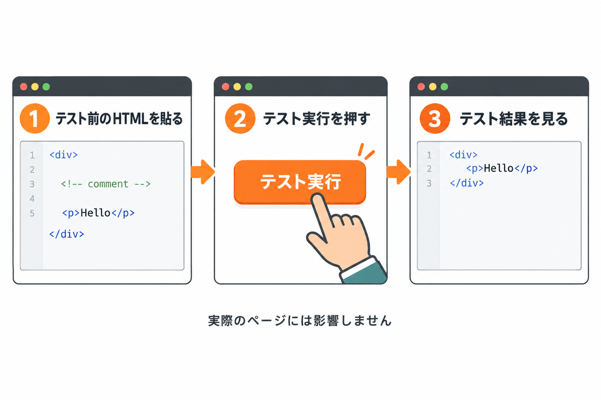
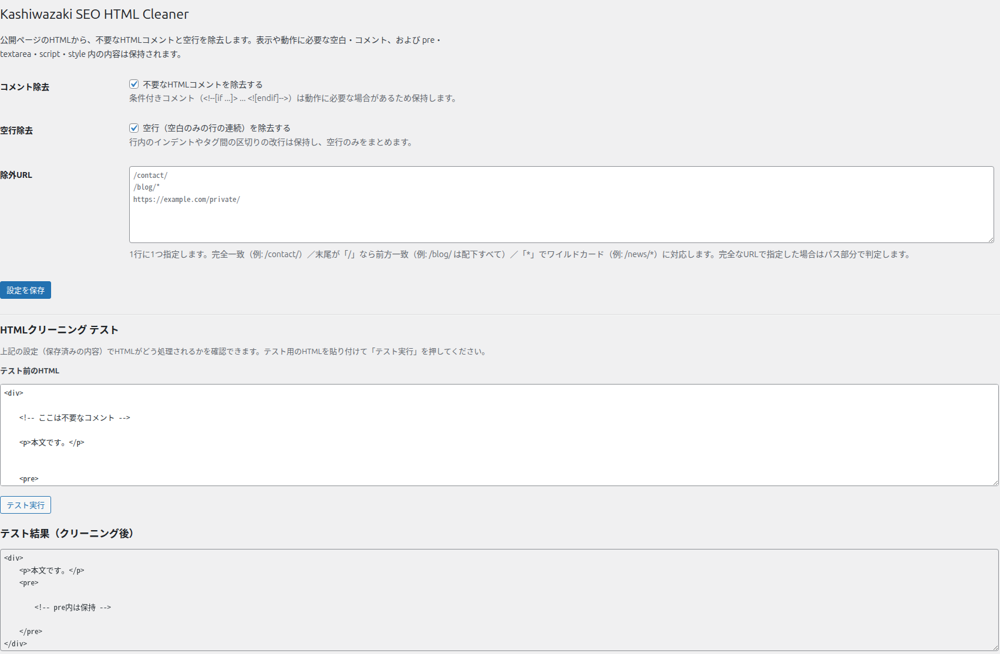

HTMLクリーニング テスト
公開ページを触る前に、設定どおりに処理されるかを手元で確かめられます。
設定画面の下部にある「HTMLクリーニング テスト」は、保存済みの設定を使って、貼り付けたHTMLがどう処理されるかをその場で確認できる機能です。実際のページに影響を与えずに試せます。
何ができるか

たとえば「コメントは消えるか」「pre の中は本当に残るか」といった点を、実際のページで確認する前に試せます。
使い方
1
テストしたいHTMLを「テスト前のHTML」の欄に貼り付けます（最初からサンプルが入っています）。
2
「テスト実行」をクリックします。
3
画面の下に「テスト結果（クリーニング後）」が表示されます。設定どおりに処理した結果がここに出ます。

項目ごとの説明
| 項目 | 内容 |
|---|---|
| テスト前のHTML | 試したいHTMLを貼る欄です。あらかじめサンプルが入っています。自由に書き換えて構いません。 |
| テスト実行 | 貼り付けたHTMLに、保存済みの設定を適用して結果を作ります。 |
| テスト結果（クリーニング後） | 処理した結果です。読み取り専用で、ここを編集しても保存はされません。「テスト実行」をするまでは表示されません。 |
結果の見方
入力と結果を見比べます。コメント除去・空行除去がONなら、不要なコメントが消え、空行がまとまっているはずです。pre の中は、空行もコメントもそのまま残ります。
| 入力 | 結果 |
|---|---|
<div> |
不要なコメントが消え、空行がまとまります。 |
<pre> … </pre> の中 |
中身は一切変更しません（コメントも空行もそのまま）。 |
テストは保存済みの設定を使います。 さきほど設定を変えただけの場合、まだ保存されていません。先に「設定を保存」を押してからテストしてください。
おすすめ: 公開ページで表示が変わったと思ったら、そのページの一部をコピーしてここで試すと、原因（コメント除去か空行除去か）を切り分けやすくなります。